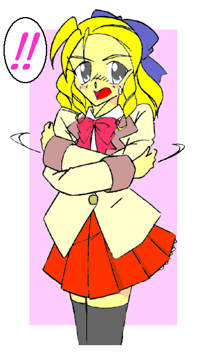

「取り敢えず、例の『変身美少女』とかいうのに会ってみたいわね……」
警視庁——
アマッドネスの被害者に接触することの多かった一城薫子は、そのまま事件の特捜班に加わっていた。
「……その話、本気で信じているんですか？ 一条先輩」
「男を女に変える化け物がいて、そいつらを退治してまわっている者がいるってのは事実でしょ？ 少なくとも男があっという間に女に変わるなんて、現実ではありえないし……『常識』ってやつを捨ててかかった方がいいみたいね、この事件」
胡散臭そうに尋ねてくる後輩の男性刑事に、肩をすくめる。
「まあ、それはそうですが……なら、どうやってその『変身美少女』を探すつもりなんです？」
「バイクね」
「……バイク？」
「白バイ隊員が見たっていう変身の現場——そのとき乗ってたバイクも、ちょっと変わったデザインだったそうだし……カスタムしているなら、バイクショップから繋がるかもしれないわ」
「つまり、そのバイクの特徴を聞きに？」
「そういうこと。ナンバープレートがなくて、陸運局に問い合わせようがないんじゃ、違法改造の線かもしれないけどね」
そう言うと、薫子は器用にウインクしてみせた。
戦乙女セーラ Ｖｏｌ．４
作：城弾
薫子たちが探しているそのバイクが、爆音を上げて走っていく。
特撮ドラマに出てくるようなデザインのカウリング。ガソリンを使って走っているわけではなく、「魔力」でタイヤを回転させているのだが、無音のバイクというのも不審に思われるので、あえてダミーの音を出している……
それに跨がっているのは大柄な男子高校生。言わずと知れた福真高校のケンカ番長、高岩清良である。
目的地である、王真高校——伊藤 礼の通う高校が見えてきた。
清良は駐輪場にバイクを止め、ヘルメットを脱いであたりを見回す。ヒト気のないのを確認して、遣い魔のキャロルはバイクから黒猫の姿に変化した。
「また、ここに来るとはな……」
「いいじゃないですか。あんなに頼まれたら嫌とは言えないでしょう」
苦々しくつぶやく清良に、キャロルは諭すようにそう問いかけた。
「確かにな……ほっといたら土下座しかねなかったぜ、あいつ——」
−ＥＰＩＳＯＤＥ１３「恩師」−
昨日のことである。
珍しく何のトラブルもない——つまりケンカを売ってくる余所の学校の奴も、アマッドネスも出現しなかった平穏な一日を終えて、清良が下校しようとした時だった。
「高岩せいらさん、ですね？」
ぴくっ。その一言でこめかみに血管が浮き上がる。
次の瞬間、清良は鬼ですら逃げそうな形相で、呼びかけてきた少年の胸倉をつかんでいた。「……いいかっ、俺をその名で呼ぶなっ。呼びたきゃ『キヨシ』って呼べっ！ いいなっ！」
相変わらず、自分の名前が相当なコンプレックスのようだ。
「はっ、ハイっ、たっ——高岩さん……すみませんでしたっ」
「……わかりゃいいんだよ。わかりゃ」
納得したようなので、手を離す清良。
頭に血が上っていたのでよく見てなかったが、その少年の制服が自分たちのと違うことに、ようやく気づく。
「……お前、王真高の生徒か？」
「はい。森本 要（もりもと・かなめ）といいます」
高校生にしてはずいぶん小柄な少年だ。もしかしたら１６０ｃｍないかもしれない。
清良に敬語で話しかけてきたことから、おそらく下級生だろう。それに加えて、まるで小学生のような童顔だった。
「……で、俺に何の用だ？」
「はい。高岩さんに、副会長に協力していただきたくて、お願いに上がりました」
要は深々と頭を下げた。
「王真の副会長？ あの伊藤のことか？」
清良の脳裏に、嫌な記憶が浮かんだ。
「……野郎の差し金か？」
「いいえ、僕の一存です。……お願いします高岩さん。副会長はずっと一人で戦ってきたんです。同じ戦乙女として、ぜひ助け——」
がぼっ——！！ 「ばっ……バカ野郎っ！」
清良は慌てて要の口を塞いだ。「……んなところでそれ言うなっ。イタイ奴だと疑われっぞ」
「すっ——すいませんっ」
「……ったく」
超古代の封印を破って出現した異形の戦闘集団アマッドネス。その魔の手から人々を守るために可憐な美少女戦士——戦乙女セーラに変身して戦っているなんて、もちろん秘中の秘だから黙らせたのは言うまでもない。
なんでこいつが戦乙女の秘密を知っているかは、取り敢えずあとで聞き出すとして——だ。
「あ、あのっ……副会長の態度が気に入らないって言うなら、代わって僕が謝ります。ですからどうか——」
「…………」
苦虫を潰したような表情を浮かべ、清良は要の顔をねめつけた。
王真高校生徒会副会長、伊藤 礼——もうひとりの戦乙女ブレイザとは、正直言ってもう二度と会いたくはない。
「せ、せめてもう一度、会って話をしてくれるだけでも……お願いしますっ！！ 高岩さんっ！！ この通りですっ！！」
「う……わ、わかったわかったっ。明日の放課後そっちに出向いてやるから…………それでいいだろ？」
顔を真っ赤にして頼み込んでくる要。それが周囲の注目を集めてしまい、居心地の悪くなった清良は思わずそう約束してしまった。
「はああ……あんなことを言うんじゃなかったぜ」
ぶらぶらと校舎へと向かいながら、清良はキャロルにつぶやいた。「……正直、あの野郎と顔合わすのは気がすすまねえ——」
「確かにブレイザ様は気位の高いお方ですが……それでも太古の戦では、セーラ様やジャンス様と力を合わせて戦っていました。なのに、それがあのような態度に出るとは……いまだに信じられません」
「……俺の方も願い下げだ」
「転生を繰り返す間に、いったい何があったのでしょう？」
「さあな……『生まれる前』のことなんてわかんねーよ」
そんな清良の姿を、校舎の窓から見ている人影があった……
男女共にブレザーが制服の王真高校。ガクランの清良は目立つことこの上ない。
校内に入ると同時に周囲を取り巻かれ、じろじろと不躾な視線を浴びせられていたが——
「高岩さん、来てくれたんですね！」 「おう……確か森本、だっけ？」
礼との会談を懇願した要が出迎えに来てくれた。まわりの生徒たちは興味を失い、その場をぞろぞろと離れていく。
「誰かと思えば……何の用だ？ 貴様の助けなぞいらないと言った筈だが？」
生徒会室に入るなり、いきなりこれである。
さすがに清良もカチンとくる。礼はそれに追い討ちをかけるように言葉を続けた。
「むろん俺も貴様を助ける気はない。……貴様が倒されたら、ここのついでに貴様が取り残した奴らを片付けてやってもいいがな」
「副会長、そんなことを言わないでください」
「お前の仕業か？ 森本」
背の高い伊藤が、小柄な森本を上からにらむ。ますます小さくなる森本。
「おい伊藤、こいつはお前の心配をして、わざわざオレのところに来たんだぜ」
「それが余計だというんだ。……貴様が俺の意のままにならないなら、むしろ邪魔だ。消えろ」
「なんだと？ この……」
（セーラ様、落ち着いて）
キャロルが念話で窘めた。校内では目立つので、生徒会室に一番近い木に登り、そこに様子を伺っているのだ。
そのことに気づいているのか、礼は挑発的にニヤニヤと笑いかけた。
一触即発。だが……
「ケンカはいかんな」
ふらりと部屋に入って来たのは、中年の男性であった。
逞しい体躯、顔の下半分を覆いつくす顎ヒゲ、短いクセっ毛……そして、青い瞳の持ち主である。どうやらこの学校の教師らしい。
「ど、ドクトル・ゲーリング！？」
「……！？」
伊藤の声がうわずった。その態度の豹変ぶりに、清良は毒気を抜かれる。
「レイ、君は優秀な教え子だ。だが、そんな風に他者を見下すのは、君の最も悪い癖だ。改めたまえ」
「はっ、申し訳ありません……以後気をつけます」
これにはもっと驚いた。相手が年上。そして教師といえど、この傲岸不遜な男が自分の非を認めて、頭を下げるとは。
「うむ、やはり君は優秀だ。ところで、君」
「俺？」
矛先が自分にむくとは考えてなかった清良は、思わず自分の顔を指差した。
「あのラ〜イダは君かね？ 我が校はバイク通学を禁止している。外部の人間でもバイクでの来校は認めていない。次から気をつけたまえ」
「ラ〜イダ？」
（えっと、「ライダー」のことでは？ セーラ様）
どうやらバイクに乗って来たことを、見とがめられているようだ。ダミーで響かせていた爆音が仇になったか。
「……わかったよ」
「高岩、貴様は言葉遣いを知らないのか？ 目上の方には敬語を使え」
半ば怒りを含んで伊藤が口を挟む。とはいえこれは正論なので、清良は姿勢を正して頭を下げた。
「申し訳ありません。気をつけます」
「うむ、君も理解が早い。優秀だ」
満足したかのように立ち去っていくゲーリング。どうやら、ただ単に注意をしに来ただけらしい。
「しかし意外だな。お前みたいな奴でも敬語を使う相手がいるのか」
その背中を見送ると、心底感心したように……そして若干の揶揄をこめて、清良は礼を横目で見た。
「貴様のような無頼漢と一緒にするな」
返答は、まさしく伊藤 礼——という印象のそれだった。
「ドクトル・ゲーリングとか言ってたな？ 外国人か？」
「貴様の目は節穴か？ 一見すれば分かるだろう？ あの人はドイツから来た物理の先生だ。……日本文化に興味を持っておられて、それが縁でウチの学校に来たんだ」
いつになく饒舌な礼。
清良はそれにも目を丸くするが、森本は慣れているらしく微笑んでいるだけだ。
「……随分と尊敬しているようだな、あのおっさんのこと」
「おっさんと言うなっ！ あの人は真に尊敬に値する人物だ。本当の意味で頭が良く、高潔だが決して威圧的ではない。温厚で人間的にもすばらしい。俺はあの人から学問以外にも、人としていろんなことを教わった。この世で唯一尊敬できる存在といってもいい。……貴様のような野蛮人とは雲泥の差だ」
こういうものの言い方をする奴だ——と頭では割り切っているつもりだったが、清良にはやっぱり無理だった。
「……悪いな森本。やっぱコイツとは無理だわ俺」
「そ、そんな……高岩さんっ」
「俺の方も願い下げだ。……森本くらい従順で可愛げがあれば、露払いくらいにはしてやるつもりだったがな」
「へいへい、お優しいこって」
清良は反論すらせず、ドアを開いて手をヒラヒラさせながら生徒会室を後にした。
「副会長、なんてことを——」
「あんな奴は必要ない。どうせ足を引っ張るのがおちだ。……それに、ドクトルに対してのあの態度も気に入らん」
よほど「おっさん」呼ばわりが気に入らなかったのか、礼は吐き捨てるようにそう言った。
それだけ彼は、ドクトル・ゲーリングに深く心酔しているのだろう。
もともとそれほど乗り気でもなかったし、こうなるのも予想通りだった。
むしろさばさばした表情で、バイクに変じたキャロルとともに帰路に着こうとした、その時——
「……！」
清良の首筋に、電気のような感覚がはしった。
「セーラ様っ！」
「……ちっ。そういや、ここらあたりもアマッドネス頻出エリアか——」
清良は舌打ちをすると、己が感覚の命ずるままにバイクを走らせた。
礼もアマッドネス出現を感知して、椅子から立ち上がった。
「副会長、また現れたんですか？」
「ああ……いつものように頼むぞ、森本」
「はい、留守はお任せください」
伊藤 礼が「ブレイザ」として初めて戦ったのは、高校一年生の夏の頃。当時中学生だった森本に絡んでいた不良たちのひとりがアマッドネスに変貌し、たまたまそいつらを「成敗」しに来ていた礼が、そこで戦乙女ブレイザとして覚醒したのである。
いきなり女性化して戸惑いつつも、礼は駆けつけた遣い魔のドーベルとともにアマッドネスを撃破。以来、その恩から森本は礼のサポートを買って出て、進学先を王真高校に変更した。
あるいは彼は助けられたときに、「ブレイザ」に一目惚れしたのかもしれない。
そして礼もまた、秘密を共有できる者がいることで心情的にずいぶん助かっている。
他人に弱みを見せることを嫌う礼だが、森本にだけは、ときどきそれを覗かせることがある。……そう、清良との共闘を拒む背景には、二人のこの関係に「邪魔者」を入れたくない部分も少なからずあるのだ。
「感覚」がふいに途絶えた。これはアマッドネスが戦闘形態から、人間形態に戻ったことを意味している。
とりあえず清良はバイクを止めて、辺りを見回した。場所は河原。
陽気は良かったが、河川敷のグラウンドは無人である。小鳥の鳴き声だけが聞こえる……遠くから車の音も。
「くそっ、こっちの接近に気づきやがったか？」
清良はバイクから降りると、周囲に気を配る。キャロルも警戒しているのか、バイクモードのまま変身を解かないでいた。
「……！？」
どこからかボールが飛んできた。清良は反射的に手をかざして、それをキャッチする。
軟式野球のボールだった。場所が河原のグラウンドだけに、そんなものが飛んでくること自体はおかしくはない。
ただし、投げた者が見当たらない。
「……おーい、それ投げてくれよぉ〜」
ジーンズにＴシャツという格好の青年が、下のほうから声をかけてきた。
清良はボールを手に、一瞬怪訝な表情を浮かべる……が、笑顔を作った。「……ああ、いくぞ」
ボールを持った右手を頭上に掲げる。その刹那——
——！！
「青年」の姿が瞬時に異形に変化し、何かを「撃って」きた。
だが、それを見越していた清良は難なくその攻撃を避ける。そして既に、変身の体勢に入っている——
「・・・変身！！」
上体をねじったまま、左右の腕のガントレットをスパークさせる清良。
閃光の中、身体が縮み、その肉体は少年から少女——戦乙女へと瞬時に作り替えられる。
「キャロルっ！」「はいっ！」
身にまとうはセーラー服。清良……セーラはキャロル・バイクモードにまたがり、一気に土手を駆け下りた。
そして、まるで西部劇のガンマンのようないでたちをした、半魚人型のアマッドネスと対峙する。
「ちっ……油断してボールを投げたところを撃ち殺してやるつもりだったのになっ。……何でわかった？」
「バカか？ 一人きりでキャッチボールしてる奴が何処にいる？」
なだらかな斜面の土手で、「壁当て」はできない。
「ふっ……そういうことか。……まぁいいさ。射程距離からはちと離れていたし、な」
言うなりアマッドネスは左腕を突き出した。その手の先が、まるで銃口のような形に変化する。
生物めいたディテール。そこから凄まじい勢いで「水」を打ち出す。
放水ではない。水の固まり——弾丸を、だ。
「……おっと！！」
セーラは慌ててその場を飛びのいた。キャロルも瞬時に小さな黒猫の姿になり、直撃を回避する。
防御形態のエンジェルフォームとはいえ、直撃は避けたい。
毒があったら大変だし、なにより相手の体内から飛び出したものに触れる——というのが、気分的に嫌だった。……が、
ドシュッ——！！ 「……なっ！？」
水の弾丸は、セーラたちの背後の土手を大きくえぐった。
「へへん……水鉄砲と馬鹿にしない方がいいよ。工業用に使われているヤツは、細い口から高圧で噴き出した水で、鋼鉄だって切れるんだ。それを弾丸のようにして打ち出すのがこのあたしさ」
「…………」
避けて正解だった。
飛び道具かよ……セーラはぎりりっと歯を鳴らした。
「どうやらテッポウウオのアマッドネスらしいな……」
「ひゃはははっ！ ご名答ぅっ！！」
ガンマン半魚人——アーチャーフィッシュアマッドネスは、調子に乗ってセーラの足元を撃ちまくる。
直撃を食らいはしなかったが、セーラは完全にその場に釘付けになってしまう。
下駄箱に向かう渡り廊下を急ぐ礼と要。外に出たら使い魔であるドーベルと合流して現場に直行するのが、いつものパターンだ。
「それにしても、絶妙のタイミングで出てきましたね」
「ああ……まるで高岩が帰るのを狙ったかのようだ——」
「君は優秀だが、その答えは半分しか合ってないな」
背後から聞こえてきたその声に、礼は足を止めた。
青ざめたその表情。ゆっくりと振り返ると、そこに敬愛するドイツ人教師がいた。
「ドクトル、それはいったい——」
どういう意味です……と尋ねようとして、礼は言葉を途切れさせた。
何故この人が、そんなことを口にする？ 自分の秘密を知る者の中に、この人はいないはずなのに……
「そう、狙ったのは彼ではない。君だよ」
「何を言っているのか……わかりません——」
ウソだった。認めたくなかった。
だが、ドクトルはそんな礼に向けて、今まで見せたこともない酷薄な笑みを浮かべた。
「ほらほらっ、躍れ躍れぇっ！！」
「……くっ！」
セーラは短いスカートを翻し、アーチャーフィッシュアマッドネスの連射をかわし続けていた。
その言葉通り、まるで舞をまっているかのように。……いや、
「調子に……乗ってんじゃねぇ！ キャストオフ！！」
セーラは身を守る鎧——セーラー服をばらばらに吹き飛ばしてフォームチェンジする。
防御は手薄になったが、代りに運動能力は格段に向上……だが、右のガントレットを叩いてさらに運動能力を特化させる。
「超変身！！」
さらなる高みを目指して、セーラの姿が変わった。長くなった髪を翻らせ、華奢なその身体が宙に舞う。
レオタードの妖精——フェアリーフォームは俊敏さを身上とし、さらに空を飛ぶことができる。
「へへっ……テッポウウオに狙い撃ちされるチョウチョってところ…… ——！？」
身の軽さは伊達ではない。アーチャーフィッシュアマッドネスが放つ連射をことごとく避けて、セーラは一気に肉薄した。
しかし、相手も水の弾丸を撃ち続けながら、水辺へと後退する。距離が詰められない。
「ここまでかっ…………アバヨっ！！」
そう言うなり、アーチャーフィッシュアマッドネスは川に飛び込み、そのまま逃げていく。
（もしかして……足止めが目的か？）
水中戦用マーメイドフォームでの追跡を躊躇するセーラ。どうにも行動が妙だ……だとしたら、ターゲットは自分ではない。
「……！！」
陽動と思われるアーチャーフィッシュアマッドネスを捨ておき、セーラはキャロルをだき抱えた。
そして人目につくのも構わずに、フェアリーフォームで空高く飛び上がった。
向かうは……王真高校。
その王真高校では今、師弟関係の二人が戦おうとしていた。
「万が一にも助けに入られては厄介だからね。彼が三人目の戦乙女というのは、先日見知っていた」
「…………」
マンティスアマッドネスに急襲されたあの時か……礼は瞬時に理解した。
清良がここで変身した姿を、それ以外に見せたことはない。
「ドクトル……なぜ、あなたが——」
「妬ましかったんだよ。本当に優秀で、しかも若い君が。さらには神から守護神としての力を与えられて。本当に妬ましかった」
尊敬している師の、「闇の部分」の独白——礼は足に力が入らなくなっていた。
「…………」
「いつの頃からかな、君に対して殺意すら抱いていた。その醜い心に付け込まれてね。私は悪魔の力を手に入れたのだよ」
言い終えると同時に、変化が始まった。
ヒゲで覆われたその顔が、女性のそれに。
髪の毛は硬質化し、サソリが伏せたような意匠の兜と化す。尻尾がまるで「お下げ」のように見える。
そして全身も外骨格の鎧に覆われる。その一部を変化させたものなのか、左手にサソリの彫り物のある盾を、右手に戦斧を携える。
「死ね、ブレ〜イザっ」
放心状態の礼の頭上に、ドクトル——いや、スコーピオンアマッドネスが繰り出す恐怖の斧が振り下ろされた……
「セ——セーラ様ぁっ、速過ぎますぅ〜っ！！」
あまりの速さにキャロルが思わず悲鳴を上げた。しかしセーラは口を真一文字に結び、そのスピードを緩めようとはしない。
フェアリーフォームで、一直線に飛んでいく。とにかくひたすらに……目指すは王真高校。
嫌な予感がする。
−ＥＰＩＳＯＤＥ１４「決別」−
「死ね、ブレ〜イザっ」
礼の頭上にスコーピオンアマッドネスの一撃が振り下ろされた、その刹那——軟式のボールが、ありえないカーブを描いて真横から斧に直撃する。
「誰だ？」
スコーピオンアマッドネスは地面に派手な音を立ててめり込んだ斧を構え直し、周囲を見回す。しかし、目の前には相変わらず目の焦点のあっていない礼と、彼を支えて付き従う要だけだ。
かすかに聞こえる呼吸音を察知して頭上を見上げると、セーラが息も絶え絶えという感じで空中にホバリングしていた。
「ま……間にあったぁ〜っ」
セーラ・フェアリーフォームは、投擲した球状のものを自在にコントロールする能力がある。その力で死角からボールを斧に当てたのである。
無意識に握りしめていたもの（河原でアーチャーフィッシュアマッドネスが投げつけたボール）だったが、こんなところで役に立つとは。
「く……役立たずめ。足止めすら出来んか」
派手な音に、生徒たちが集まってきた。スコーピオンアマッドネスはドクトル・ゲーリングの姿に戻り、礼を一瞥した。
それはまるで、別れの挨拶のように見えた。
感傷に浸る間もなく、「彼」は生徒たちの中に紛れ込んだ。
「まっ、待ちなさいよっ」
舞い降りたセーラは、瞬時にエンジェルフォームに戻り、それを王真高の女子制服に変化させた。
その格好でドクトルの後を追ったセーラだったが、まんまと逃げられてしまう。地の利は向こうにあるようだ。
「ああんっ、もうっ！」
女の子口調で悔しがるが、相手は人の姿のままなので感知できない。諦めて元の場所へと戻ると、そこではまだ礼が蹲っていた。
虚ろな視線で、スコーピオンアマッドネスが穿った地面の穴を見つめている。……それは、敬愛する師匠が自分を殺そうとした証。
「ドクトル……」
「ふ、副会長——」
要も、なんと声をかけていいかわからないようだ。
セーラにもわからない。見守ることしか出来なかった。
「あ、あのさ……げ、元気、出しなよ。……誰にだって、弱い部分があるし——」
「キサマに何がわかる！」
カチンッ——！ 「わかんないわよっ！ 男のクセにうじうじしてっ！」
あまりと言えばあまりの礼の物言いに、セーラは思わず怒鳴り返した。オーバータイムですっかり女の子の考え方になっている。
売り言葉に買い言葉……だが、これが逆に幸いした。
「言った筈だ。お前の助けなどいらんと。……ましてや俺とドクトルの間の問題だ。誰にも邪魔はさせん」
落ち込んでいた礼の心が……強くて、憎らしい表情が戻ってきた。
「ふーんだ、泣いて頼んでも知らないからねっ」
悪態をつきながらも、セーラは笑顔を浮かべた。
（これなら大丈夫そうね……）
そう判断したセーラは、ここは要に任せて立ち去ることにした。服を王真高の制服から、ミニのワンピースに変える。
「待ってください、高岩さん」
そのまま校門を出ようとしたセーラの背中に、声がかかった。
「森本君？ 礼はいいの？」
精神が女性化しているためか、呼称まで変わっている。
「いえ……相当ショックだと思います。副会長は心底ドクトル・ゲーリングを尊敬してましたから——」
そんな相手に殺されかけた。それも宿敵であるアマッドネスに変貌してである。その衝撃は計り知れない。
「そうよねぇ……」
顎に右手の人差し指を当て、セーラは可愛らしく小首をかしげて相槌を打つ。
「だから高岩さん、どうか——」
言葉を続けようとする森本の口に、自分の顎に当てていた人差し指を「黙って」というように当てる。
「この姿の時は『セーラ』って呼んでちょうだい。ねっ、わかった？」
相手は下級生。にっこりと「お姉さん」な微笑を浮かべる。
礼——ブレイザという存在に近いからか、清良とセーラのギャップも理解できるらしい。要は素直に頷いた。
「はい、わかりました、セーラさん。……それで、副会長に何かあったら連絡をしたいので——」
「いいわよ。番号とメルアド交換しましょ」
彼女はスカートのポケットから、ピンクの可愛らしい携帯電話を取り出した。
「セーラさんだと、持ち物はそんな風に変化するんですね」
「へえ、ブレイザもやっぱりあたしみたいに服とかを変えられるのね」
「はい。……でも、副会長はどっちかというと大人っぽいのを好みます」
「どうせあたしはお子ちゃまですよーだ」
舌を出してみせる。傍目には男の子と女の子の微笑ましいやり取りなのだが……
翌日——
「セーラ様……学校が始まりますよ」
「知るか！ ああ。またやっちまったぁぁぁぁっ。何だあの『先輩女子』ぶりはよぉぉぉぉぉっ！？」
清良はまたもやカメのように、布団にもぐりこんでいた。
予想通りではあるが、ゲーリングは学校に来なかった。当然、連絡もなかった。
学校に行くと家族に言い残し、ゲーリングは海岸で佇んでいた。
（私の中に悪魔がいる）
（悪魔と呼ぶか……いいさ。だがお前はこの「強さ」の代償に魂を差し出したのだ。今更何を躊躇う）
スコーピオンアマッドネス——スストの声が脳裏に響く。
ゲーリングとの相性がいまひとつなのか、今のところは彼と完全に一体化していないようだ。
（違う。私の呼ぶ「悪魔」とは、レイに対する殺意のことだ）
若くして優秀な少年——その才能を認めた故に、ゲーリングは彼を教え子とし、同時に才能に嫉妬して殺める決意までした。
（ならばその殺意に身を任せるがいい……奴がお前より優秀というなら、お前は返り討ちにあうだろう。ならそれまでだ）
その、文字通りの「悪魔のささやき」がゲーリングを動かした。
彼は携帯電話を取り出し、メールの文章を打ち込み始めた……
「決着を、か……」
三時限目の終わった頃にそのメールを受け取った礼は、悲壮な表情を浮かべる。
『１５：００ 神奈川県、三浦海岸で待つ。 Ｇ 』
ゲーリングからの呼び出しだった。
四時限目以降の授業をボイコットし、礼は足早に外へと向かった。
一方、福真高校。
パターンになりつつある精神女性化にいつまでも落ち込んでいるわけにもいかず、清良は律儀に登校していた。
しかし、やっぱり思い出すたびにこっ恥ずかしいのか、ひたすら不機嫌に黙り込んでいた。
同時刻——
「あれ？ 副会長、いないんですか？」
２年の教室を訪ねてきた要は、礼が不在と聞かされて首をかしげた。
「ああ……珍しいな、忘れ物までしてやがる」
応対した同じ生徒会の二年生が、礼の落としていった携帯電話を見せる。
「副会長が忘れ物？」
人間だから忘れ物くらいするであろうが、完璧超人な礼としては確かに珍しい。「……ちょっといいですか？」
嫌な予感がした要は、先輩男子から礼の携帯電話を受け取ると、躊躇いなくディスプレイを見た。
「……なんだと！？ 三浦海岸で伊藤が決闘？」
『はい。ですが相手がドクトル・ゲーリングでは副会長が平常心でいられるとは思えません』
「あの、馬鹿がっ……」
携帯電話を切ると、清良もあわてて学校を飛び出した。念話で呼び出したキャロルと合流し、そして猛スピードでバイクを走らせた。
三浦海岸。まだ海水浴のシーズンでもなく、遊泳禁止エリアなのでマリンスポーツを楽しむ者もいない。
誰もいないし、建造物もない。ブレイザも遠慮なく剣を振るえるであろう。
「レイ、ここがお前の墓場となる」
「そいつはどうかな？」
つぶやきに対して答える声。待ち人来たる……礼が現れた。
「案外、ドクトル・ゲー…………スコーピオンアマッドネス！ お前の墓場かもしれんぞ」
ドクトルの名を呼ぼうとして、礼は思いなおした。目の前の存在は敵だ……師ではない。それに徹した言い方に変える。
そして、いつものように対峙する。
「馬鹿者め、なぜ先に変身しない？」
その言葉と同時に、ゲーリングはサソリ女へと変化する。
礼にはそれでも躊躇があった。いかにアマッドネスにとり憑かれたといえど、敬愛する師と対決することに。
しかし相手が殺意をむき出しで襲いかかってきては、そうも言っていられない。
右手を前に、左手をへその位置にかざす礼。……だが、スコーピオンアマッドネスの斧がその体勢を崩す。
「そうやすやすと変身などさせんぞ」
アマッドネス出現をキャッチして、清良はセーラに変身した。
その感覚に導かれるままバイクを走らせると、スコーピオンアマッドネスと礼を見つける。
砂浜に入り込むバイク。オンロード仕様だが、魔力で走るだけに砂地でもスタックせずに問題なく突っ走る。
そのままキャストオフ、そしてマーメイドフォームへ超変身すると、セーラはバイクから降り立った。
用意した伸縮警棒をランスに変え、その怪力で力任せに放り投げた。
「むっ！？」
自分目がけて飛んでくる得物を、スコーピオンアマッドネスは咄嗟に盾で防いだ。その隙に礼は右手を前に、左手をへその位置に構える。
へそに出現した光の渦から小太刀を引き抜き、腰ダメに……右手をそのつかにかけると、
「変身っ」
キーワードとも言うべきその言葉と同時に、鞘から引き抜く。眩い光とともに、礼はブレイザへの変身を完了した。
「「ちっ」」
舌打ちも同時だった。
スコーピオンアマッドネスは、ブレイザを戦闘形態にしてしまったことに対して。そしてブレイザにしてみれば、飛び込んできたランスがセーラのものと気付いたことで。
だが、それを気にしている暇はない。
「キャストオフ」
相手も強固な盾を持っている。小太刀では文字通り太刀打ちできない。
戦闘に特化したヴァルキリアフォーム——袴姿へと変化するブレイザ。
そして激しく剣を振るうが、その全てがスコーピオンアマッドネスの盾によって防がれる。
（なんて硬い盾だ。これを破るには……だがその暇が……）
「なにやってんだか……じれってぇな……」
こちらもヴァルキリアフォーム——体操服姿で戦いを静観するセーラ。
彼女は礼の言葉通り、手を出さないつもりでいた。
もちろんブレイザが危なくなったら、いつでも間に割って入るつもりだった。それまでは納得いくまで……ぎりぎりまで二人で戦わせるつもりだ。
波打ち際まで来てしまった両者。
「ふふふ、その刀では我が盾は敗れんぞ」
くぐもった女声で挑発するスコーピオンアマッドネス。どうやら意識はアマッドネスの方が強くなっているようだ。
「くっ」
まず動きを止めようと足を狙うが、スコーピオンアマッドネスは大きな盾を軽々と扱い、攻撃をブロックする。
そして動きを止めると斧で攻撃を仕掛ける。
さらには弁髪のように見える「サソリの尻尾」が、素早い動きでブレイザを牽制する。
その先端には、毒針が光る。
「ええい、ちょこまかと…………目障りですわっ！」
戦闘時間が長くなってきて、ブレイザの精神も女性のものへとシンクロしていく。
ならばと「尻尾」を狙うが、斧が防御に転じてガードされる。
「むんっ！」
ブレイザの剣を止めたスコーピオンアマッドネスは、左手の盾で彼女を思い切り突き飛ばす。
「きゃあっ！！」
十数メートルも吹っ飛ばされる。派手に転倒するが、砂浜ゆえにダメージは少ない。
しかし、その体勢の乱れを見逃してくれる相手ではない。
スコーピオンアマッドネスは斧を横手で放り投げた。それがブーメランのように回転してブレイザを襲う。
彼女はとっさに刀でその軌道をそらした。まともに受け止めると折れかねない。だから僅かに当てて受け流す。意思の力でコントロールされているらしい斧は、そのまま大きくターンして、スコーピオンアマッドネスのところに戻っていく。
今なら相手は攻撃手段がない。
「ドーベル！」
待機していた黒犬を呼ぶ。ドーベルはあるじの元へ走りながら、サイドカーに変化する。
カーゴ部分に乗り込み、両足で踏ん張る。ブレイザは右利き、左が死角になる。
「超変身」
ドーベル・サイドカーモードが走り出すと同時に、甲高い声でブレイザが叫んだ。
服が着流し姿に変わり、髪も首筋で無造作に留めた状態になる。体格は一回り大きくなった。
手にした刀は巨大な剣に……敵の駆る馬そのものを斬る目的で作られた「漸馬刀」に変化する。
「ブレイザも超変身できるの？」
「はい。あれは膂力に長けたガイアフォームです。ブレイザ様にはもう一つ、スピードと感覚に特化したアルテミスフォームがあります」
「何よそれ？ 女神さまの名前をつけるなんて、どんだけ傲慢なのよ」
ちなみにパワータイプゆえに大地のイメージで大地神ガイアの名を、そして感覚に優れることから狩りの神アルテミスの名を頂いている。
「うおおおおおっ！！」
それまでの上品なイメージと打って変わって、雄たけびとともに突っ込むブレイザ。
スコーピオンアマッドネスはそれをまともに食らうはずもなく、ひらりと避ける。
「ふふふふ、その巨大な剣はさすがに防ぎきれない……だったら避けるだけだ。さぁ、そんな無理な攻撃がいつまで続くかな」
「…………」
ブレイザの顔に、焦りの色が滲む。
「どういうことなの？」
「ブレイザ様のあの姿は、セーラ様のマーメイドフォーム以上のパワーと思われます。しかしそれだけに負担が大きく、約３分程度しか持続しないのです。それにアルテミスフォームに至っては、極限まで研ぎ澄まされた五感が３０秒しか保ちません」
セーラのフェアリーフォームは俊敏性がある。さらに器用にもなるらしく、いろいろな技も使える。だが決定的に腕力が足りない。そして身軽さを得るためもっとも防御力が弱い。
マーメイドフォームは怪力、そしてエンジェルフォームに次ぐ防御力があるが、とにかく動きが鈍い。
互いに「弱点」は存在するが、それは使い方でカバーできる。しかしブレイザの超変身は、自分のものとは事情が違うようだ。
「でもそれじゃ、その間に逃げられたら」
「そのあたりはドーベルがフォローすると思いますが……」
仲間を信用しているキャロルだが、それでも不安があるようだ。
「くくくっ、さぁどうした？ 来たらどうだ？ ……！？」
さらに挑発するスコーピオンアマッドネスだったが、その表情が突然凍てつく。「……なっ、う——動けん……ど、どういうつもりだ？」
「……！？」
芝居ではなく、金縛りにあっているらしい。
「急げ、レイ。もう、持たない——」
「ドクトル！？」
ゲーリングの意識が僅かに勝ち、スコーピオンアマッドネスの動きを止めたのだ。
「持たない」は自分のことだが、同時にガイアフォームの限界時間も指摘していた。
「レイ、私の中の悪魔を殺してくれ！」
悲痛な叫びが彼女に届いた。
「ドクトル……今、楽にして差し上げますわ」
再び猛スピードで走り出す、ドーベル・サイドカーモード。すれ違う刹那、ブレイザは巨大な剣を横薙ぎにする。
「くっ」
土壇場でスコーピオンの防衛本能が勝り盾をかざす。しかし、その盾ごとスコーピオンアマッドネスを一刀両断する。
「見事、だ、レイ。やはり、君、は、優秀だ——」
スコーピオンアマッドネス……ドクトルは笑ったように見えた。そして大爆発を起こし、悲しい対決は幕を下ろした。
肩で息をつくブレイザに歩み寄るセーラ。彼女もやるせない戦いを幾度も経験していたので、ブレイザの心情は理解できた。
アマッドネスを倒して分離させる。その際に、ヨリシロにされていた者の肉体は一度破壊されるが、再生される。ただしその際には、必ず女性になってしまうのだが。
元がひげを蓄えていたため、壮年の女性と化した今は、ビジュアル的にはかなりのギャップがある。爆発の際に千切れた服を女物として再生していたブレイザが、それをゲーリングに着せていた。
セーラはそこに優しく手を差し伸べた。「……さぁ、帰りましょうブレイザ。ドクトルも病院に運ばないと」
ブレイザは凄まじい目つきでセーラを睨みつけると、その左頬を強烈に叩いた。
「きゃっ」
セーラは思わず波打ち際に倒れこむ。
「……何するのよっ！？」
抗議の声を上げるその目前に、限界時間が来てエンジェルフォームに戻ったブレイザが小太刀の切先を突きつけていた。
「一度ならず二度までも、わたくしのプライドを踏みにじるなんて……もう許せませんわ。アマッドネスの前にあなたを成敗して差し上げます」
（まさかセーラまで現れるとはなぁ……）
三浦海岸の沖。
ウェットスーツに身を包んだ男——矢追が舌を巻いていた。
（悪いねススト。あたしも命が惜しいしな……ブレイザはともかく、セーラは飛べるし、水中じゃ活動限界のない体にもなれるしな）
スコーピオンアマッドネスが伏兵としていたのが、このアーチャーフィッシュアマッドネスだった。
その目的は水中からの狙撃。命中すればよし。外れても、致命的な隙を作れる……それを狙った布陣たった。
計算外だったのがセーラの乱入。ブレイザの性格ならば助っ人を頼むはずがない——そういう読みだったのだが、外れてしまったのだ。それでもまだ、二人がかりでスコーピオンアマッドネスと戦えば、こちらには気づかれにくい。
背後から撃つこともできたが、結局ただひたすら待ち続けている。
いくら沖にいるとはいえ、このタイミングで「変身」などしようものなら、逆に感知されて、どちらかがたちどころに向かってくるだろう。
アーチャーフィッシュアマッドネスが躊躇しているうちに、決着がついた。
そして波打ち際では、さらに信じられない光景が展開していた。
ブレイザが仲間であるはずのセーラに平手を見舞い、そして手にした刀の切先を突きつけているのだ。
−ＥＰＩＳＯＤＥ１５「激突」−
「……どういうつもり？」
仲がいいとはお世辞にも言えないセーラとブレイザ。しかし仮にも、ともにアマッドネスの魔の手から人々を守るために覚醒した戦乙女同士である。殺気満々で刀を突きつけられる筋合いはない。
「あなたはわたくしの誇りを踏みにじった。それで充分ですわ」
その目が本気であることを物語っていた。
「それでこんなことをするの？ おかしいじゃない！」
未だ立ち上がらせてもらえないセーラが言い返す。
「問答無用っ」
ぐっと小太刀を突き出し、むき出しの部分である顔に突き刺そうとする。大きく振り上げれば、そこに隙が出来るからだ。
傷をつけて動けなくする。恐らくは狙いは目……視力を奪い、行動をできなくしてからとどめを刺す気だ。
（仲間割れとはいいぞ。セーラを倒してくれるなら好都合。あとはスストとの闘いで疲れきったブレイザをここで——）
矢追はアーチャーフィッシュアマッドネスへと変化した。テッポウウオは海水と川の水が交じり合う「汽水」では生きられるが、純粋な海水の中ではそう長く活動できない。
一発だけ撃つ……しくじったら即座に逃げる。人の姿でいる内はウェットスーツで耐えられるが、当然泳ぐ速度はがた落ちになるだろう。
欲張らずに一発放ったら即座に逃げて、限界まで距離を稼ぐ。そのつもりだった。
スピード違反の改造バイク——清良の駆るキャロル・バイクモードの出現情報を得て出張って来た薫子たちは、神奈川県警の無線を傍受した。
『本部より。三浦海岸で爆発音を聞いたとの通報あり。付近の移動は急行されたし』
話に聞いた『化け物を倒す存在』なら、無関係ではないかもしれない。
行ってみる価値はある——そう判断した薫子は、三浦海岸へと車を走らせた。
「……むっ！？」
狂気に取り付かれても戦乙女。ブレイザはアマッドネス出現の感知をした。
「今だっ……キャストオフ！！」
「きゃああっ」
ばらばらに吹き飛んだセーラのセーラー服が、ブレイザを跳ね飛ばす。
セーラはそのままフェアリーフォームへと超変身して、沖へと飛翔した。
上空で再びヴァルキリアフォームに変わり、そして水中モードのマーメイドフォームへと変化して海中に飛び込んだ。
水中なら淡水でも海水でも関係ないマーメイドフォームと、海水では難のあるアーチャーフィッシュ。……勝負は見えていた。
「ちっ……無粋なことを」
ブレイザには水中や空中で活動する能力はない。「……仕方ありません。日を改めますわ。帰るわよ、ドーベル」
興ざめしたブレイザは、サイドカーにドクトル・ゲーリングだった女性を乗せて、その場を離れた。
「一城さん、あれ！」
同乗した若い刑事——桜田が指し示すほうを見ると、海中と思しき場所から竜巻が起こった。
「行ってみましょう」
薫子たちが現場に到着すると、爆発音が聞こえてきた。
舗装路の路肩に車を止め、ドアロックももどかしく砂浜に駆け下りる。
音のした方へと近づいていくと、そこにはスクール水着姿の少女と、気絶した全裸の女性がいた。
「……え？ なんなの？ これ」
あまりにシュールな取り合わせであった。スクール水着は理解できるが、全裸の女性というのが不可解だ。
死体遺棄の際に身元判明を避けるため衣類を剥ぎ取ることは多々あるが、女性はどうやら生きているようだ。
「それ、もしかしてあなたが？」
「あ、あの……」
職業柄、ついつい詰問口調で質問してしまう薫子。それに気圧されたわけでもあるまいが、スクール水着少女——セーラは言葉を濁してあとずさった。
確かに爆発も竜巻も、自分が原因。アマッドネス退治といえど、いささか後ろめたい。
「ねえ教えて。ここで何があったの？」
おびえているような様子の少女——セーラに、薫子はできるだけ優しく語り掛けた。もう一人の刑事——桜田が、さり気なく背後に移動する。
そこに一台のバイクが走ってきた。無人走行……しかも音を立てていない。
セーラはすれ違いざまに、それにひらりとまたがる。瞬時にエンジェルフォーム……セーラー服を模した戦闘服にチェンジする。
「その人のこと、お願いします」
鈴を転がすような声で言うと、バイクとともに走り去る。薫子はとっさにデジカメで写真を撮った。
「服が変わった……あれがもしかして、例の『正義の味方』？」
爆発、竜巻、無人のバイク、変身した少女。……ここまでそろうと、「眉唾物」とも言ってられなくなってきた。
次の日——
礼は大学病院へ、ゲーリングの見舞いに訪れた。
アマッドネスの被害者の病室は、可能な限り他の女性患者とは別ににされている。女性患者はではなく、まだ自分が女性化したのになじんでいない『被害者（アマッドネスにとり憑かれていた人物を含む）』たちの方に配慮してである。
余談だが、アマッドネスに変化してからの『犯罪行為』は立証自体が難しく、『心神喪失状態』と見なせば、ほとんど立件不可能な代物である。
もちろん、ホースアマッドネスの馬場やマンティスアマッドネスになった釜本のように、とり憑かれる前に犯罪行為があった者はその限りではない。もっとも邪心がアマッドネスに吸い尽くされているので、喜んで罪の償いに応じる者がほとんどだ。例えば馬場は、収監された刑務所で模範囚になっている。
ドクトル・ゲーリングの場合は、礼に対する殺意からアマッドネスにとり憑かれている。しかしそれゆえに他の人間には手を出さず、また相性がいまひとつだったためか自我もかろうじて失わなかった。礼が訴えなければ、刑事罰はないだろう。
それでもゲーリングは深く後悔している。そして止めるためとはいえ、自分の手で師に刃を向けた礼も。
「ドクトル、お体は？」
「ああ、大丈夫だよ。医者もそう言っていた」
男のときは深く渋みのある声であったが、今はやや細く高い女の声。年齢ゆえか優しげな顔つきで、当然だがトレードマークのひげは微塵もない。
「私は大丈夫だが、妻がね」
ゲーリング本人である証明はなされた。それは同時に、ゲーリング婦人の「夫」がいなくなったことでもある。
「こんな身体になった以上、妻とは別れなくてはなるまい」
子宮や卵巣もある完全な女性の肉体。そんな二人での「夫婦」は、今の日本では成立しない。
「ドクトル、俺は——」
「何も言わなくていい。よくやってくれた」
一つの家庭を崩壊させた罪悪感に悩まされる礼。それに対して、ゲーリングは本心から感謝していた。
「しかし……俺は正々堂々とは戦いませんでした。望まないといえど、あんな奴との二人がかりだなんて——」
「待ちたまえ、レイ。何故君たち二人はそんなに仲が悪い？ 私にとり憑いた悪魔が語っていたが、君とあのラ〜イダは太古の昔は盟友だったというではないか。それがどうして——」
「正直、俺にもわかりません。しかし……どうにもこうにも、アイツと顔を合わせていると、怒りや憎悪がこみ上げてくるんです」
相性の悪さというレベルではない。「……やはりアイツは許せない。俺とドクトルの一対一の神聖な戦いに、土足で踏み込むようなマネを」
「レイ、その考え方はおかしいぞ！」
窘めるゲーリング。しかし礼——ブレイザの腹づもりは決まってしまったらしい。
一城薫子は撮影した写真を元に、セーラ、そして彼女のバイクの手配書を作成していた。
「女の子の方は可愛いけど、このくらいなら他にもいるわね。けど、バイクは別」
「そう言えば一城さん、白バイ隊員は高校生らしい男子が、この女の子になったと言ってましたっけ」
桜田は出会った少女を白バイ隊員が遭遇した変身少女——セーラと決めつけていた。事実そうなのだが。
「そうね、まずは裏を取りましょうか」
二人は証言を取るべく、所轄の交通課に出向いた。
「……まさかテメーのほうからこっちに来るとはな」
福真高校の正門前。登校してきた清良を、礼が待ち構えていた。
以前の逆で、福真高の生徒たちの出入りする校門に、ブレザーの礼はかなり目立つ。遠巻きにその姿を見ながら校舎へ入る生徒たち。
しかし、対峙している相手が清良だと見ると、「また喧嘩か」で片付いてしまう。
「生徒会副会長様がサボりとは関心しないな」
「…………」
清良の傍らにいる友紀も、礼を不思議そうに見ている。
今までもここで清良を待ち伏せていた不良たちはいたが、この男はどうもそうは見えない。
（こんな真面目そうな人がどうして？ 最近のキヨシ、なんだか変だわ。色々隠し事してるみたいだし……もしかして、みんなが見たっていうペガサスとか怪人とかと関係あるのかしら？）
「高岩、ちょっと用がある。出来れば誰もいない場所に行きたい」
その口調はとても「話し合い」という雰囲気ではない。それは清良も察した。
「わかったよ……」
荒事には慣れている彼である。理解できた。「来いよ。ちょうどいい場所がある」
「いいのか？」
背中を向けた清良に、礼が言葉を投げかけた。
「ああ。副会長様と違ってサボりなんざしょっちゅうだ」
自嘲気味に笑いながら答える清良。
「今生の別れになるぞ」
その言葉で自分の見立てが甘いことを知った。……喧嘩じゃない。殺し合いだと。
振り返った清良の視界に、不安走な友紀の顔があった。
新体操部に所属する彼女は、基本的に体育館で活動しているため、今までの事件を直接目撃することがなかったのだ。
「心配すんな……後で行くからよ」
精一杯の「ウソ」だった。
町外れの廃工場。機械などは既に撤去され、老朽化した建物の解体も始まっているようだ。一部では鉄骨などが横たわっている。
天窓もすすけて薄暗い。むろん照明などもない。ほこりにまみれた、薄汚い空間である。
その真ん中に二人は対峙していた。傍らにはそれぞれの従者が控える。
「おい、本気か？ 協力しないのはともかく、やり合う理由もないだろう。……俺たちが戦って喜ぶのはアマッドネスだけだぜ」
ついでに言うなら、一部のプロデューサーと脚本家とおもちゃメーカーもである（笑）。
「言ったはずだ。踏みにじられた誇り——それだけで充分」
威圧的……もはや狂気の漂う目で清良をにらむ礼。臆したりしないが、清良はため息をついた。
「なら仕方ねえ……」
清良は右手を真上に、左手を真下に向けた。
「やっとその気になったか……」
礼は右手を方の高さで真正面に、左をへその位置に構える。
「……一発ぶん殴って、目ぇ醒まさせてやる！」
ゆっくりと腕を水平に振る。
「……それが貴様の遺言か？」
出現した小太刀を腰だめにして、右手をかける。
そして、二人が同時に叫ぶ。「・・・変身！」
清良は脇につけた腕を、前方に突き出してクロスさせる。
礼は小太刀を引き抜く。
ともに眩い光を放ち、二人は戦乙女へと姿を変える。
「「うおおおっ！！」」
どちらからともなく相手に突進する。
ぎりぎりまで引きつけて小太刀で一撃を加えるブレイザ。しかしそれはセーラの拳の間合い。
「……目ぇ覚ましやがれ！」
渾身の力を込めて、真紅のガントレットがブレイザの頬を砕きに掛かる。
それをスゥエーする。後方にかわすというのが長年の喧嘩三昧で鍛えた勘が出した予想。当然目線が外れる。そこに左の膝を腹部に叩き込むつもりだった。
手段を選ばないのなら股間が近い。ましてや無防備なスカート。いくら「男の泣き所」が消失しているといえど、痛いことはいたいはずである。
そうでなくても『男の習性』で反射的に身をかわす。だがそれはしないセーラ……むしろ「清良」か。
「……っ！？」
ところが予想外。ブレイザは小太刀を盾にした。ご丁寧に刃をセーラに向けてである。
ガントレットは拳まではカバーしてない。自分で自分の拳を切り裂くことになる。「……うおっ、危ねえっ。えげつねぇ真似しやがって」
「お前なぞに手段を選ぶ必要はない」
挑発は理解していても、頭に血が上るには充分だった。
左手を軽く顎目掛けて振りぬく。顎の先端にヒットして、てこの原理で顔面全体をブレイザから見て左に振り向かせる。
たまらず後ろによろけるブレイザ。体勢の崩れたところで追い討ちとばかしに飛び掛るセーラ。だが、
「キャストオフ」
「……うわっ！」
セーラは散り散りに飛散したブレザーの戦闘服に吹っ飛ばされる。
「自分が使った手に引っかかるとは、並外れた馬鹿だな。死なないと治らんなら殺してやる」
和装のヴァルキリアフォームになったブレイザは、一回り大きくなった得物で横薙ぎにセーラを「斬る」。
しかし、この攻撃はエンジェルフォームのセーラー服戦闘服が、「鎖帷子」のようにブロックした。
「この野郎……本気で斬りつけやがったなっ」「何度言えばわかる。殺すといっているだろうがっ」
完全にセーラも逆上した。
「ああもうっ、ドーベルっ、どうしてそんなに落ち着いているのよ。早くブレイザ様を止めないと。それ以前にどうして窘めなかったのよ？」
「膿は出してしまった方がよいと思ってな」
「……膿？」
「ああ。私の考えが正しければお二方——いや、ジャンス様も、皆……」
セーラもキャストオフして服を飛び散らせ、間合いを取る。
放置されていた錆びた鉄骨のところで、マーメイドフォームに超変身。まるで空き箱でも持ち上げるかのように鉄骨を持ち上げ、そして投げつける。
これを避けないとセーラは読んだ。ブレイザはそういう性格だと、さすがにわかってきた。
予想通り、ブレイザはガイアフォームに超変身して、鉄骨を空中で真っ二つにする。その隙にヴァルキリアフォームを経て、フェアリーフォームに超変身したセーラが飛んだ。
その俊敏性と飛翔能力でブレイザの背後を取る。
どう見てもパワーのみのタイプと見立てたからだ。それが最初からの狙い。
例え読まれていても、相手もまだ見せぬ「俊敏性のフォーム」になるのに隙ができると。
だが、それは甘い予想だった。
「超変身」
着流しが一瞬で巫女装束に。
どことなく雰囲気も清楚な、それでいて引き締まった表情の巫女姿にブレイザは変化した。
（えっ？ ブレイザは直接別のフォームになれるの？）
自分が必ずヴァルキリアフォームを経るので、ブレイザもそうだと思いこんでしまった。
「……にぃっ」
不気味に笑う、ブレイザ・アルテミスフォーム。完全にセーラの動きを見切っていた。
（とりあえず、すり抜けるしかないっ）
だがその動きすら見抜かれていた。筋肉の動き。気の流れで読めるのである。
そしてブレイザの刀が一閃された。
空からぐんぐんとブレイザの間合いに接近するセーラ。
一閃される刀。回避不能……居合いの間合いだ。セーラはとっさにむき出しの部分を、ガントレットでカバーする。
それが刃をブロックして、ブレイザの愛刀を弾き飛ばす。
「ちいぃっ！」
ブレイザ本人ものけぞり、攻撃態勢が崩れた。
そのまま逃げるかと思われたセーラだったが、それが癪だったらしく、再び向かってくる。
ブレイザが慌てて刀を拾いに行く、そこへ突っ込んでいく。
そして——
「ドレスアップ！」
セーラ瞬時に防御形態——エンジェルフォームに戻る。飛行能力は消失するが、そのまま勢いで突っ込んでいく。
「え？ え！？ ええーっ！？」
まさかそのまま突っ込んでくるとは！？ さすがのブレイザも慌ててしまう。反射的に逃げようとして向けた背中に、逆に直撃を受ける羽目に。
−ＥＰＩＳＯＤＥ１６「真相」−
「「きゃああっ！！」」
とても本来は男とは思えない可愛らしい悲鳴を上げ、もつれ合って倒れこむセーラとブレイザ。
「……ほっ」
最悪の場面を回避して安堵の息をつくキャロル。ドーベルは相変わらず、微動だにしない。
「いったぁーい……」
セーラが肘を押さえながら立ち上がった。膝を閉じたまま「スカートの中身」が見えないようにである。
言葉遣いだけでなく、仕草もだいぶ女性的になってきていた。
「あたたた……」
こちらは腰を押さえた状態で立ち上がるブレイザ。逃げようとした背中に直撃されたのだ。
愛用の刀はその際に遠くへ放り出してしまった。
限界が来たのもあり、エンジェルフォームに戻っている。
「もう……思い切り胸打ちつけたから痛いじゃない。やるんじゃなかったわ」
ぴくっ——
セーラのそのつぶやきを聞いたブレイザのこめかみに、血管が浮き上がった。「……今、なんて？」
「え？」
ケンカの最中と言うのを忘れて、間抜けな表情を浮かべるセーラ。
「何て仰ったと聞いているんですっ！！」
「だから……胸を打った、って——」
「そっ……それは、わっ、わたくしに対する嫌味ですのっ！？」
「は？」
もしかしたら戦闘中より凄まじいかもしれない形相のブレイザ。
何のことかわからずセーラは思わずブレイザの顔を見る。そのまま視線を下げて、胸の辺りで止める。
「……！」
一瞬にして察した。
ブレイザの方は、逆にはっとなる。
うかつにも「弱み」を見せたことに気がつくが……後の祭り。
セーラは、にやっとイジワルな笑みを浮かべた。「ああそっかぁ……ブレイザってば胸ペッタンコだもんねぇ」
「……！！」
その言葉通り、ブレイザの胸は恐ろしく薄い。
ブラジャーのサイズで言うと、Ａカップ。フォームによってはＡＡＡというのもあった。
「そこだけ変身してなくて、男のままなんじゃないの？」
何しろ殺されかけているのだから、出てくる言葉も辛らつになろうものだ。
「…………」
言われたブレイザとしては、最大の泣きどころ……そして精神が完全に女性化していたので、コンプレックスになっているのだ。
男の胸がいくら薄くてもまったく関係ない。それを気にするということは、それだけ女性の精神状態になっているという証拠だ。
だから、ブレイザは思わず口で反撃してしまう。「こ、こ、この……カマトトっ！ 腹黒ぶりっ子女っ！！」
「んなっ！？」
いきなりの罵倒に、思わずギクッとするセーラ。
身におぼえがあった……変身時間が長くなって精神が完全に女性化すると、男の時の反動で必要以上に可愛らしく振舞うようになると。
「中身」が女の子のままだと可愛らしい服装を好んでするし、寝る間も惜しんでファッションとメイクの研究——というのがパターン化しているし。
「あ〜ら、図星ですのね。それで何人の殿方をたらしこんだのかしら？」
的中したのを察してブレイザに余裕が戻り、高飛車な物言いになる。もちろんそんなことはあろうはずがないのだが、セーラはキレた。
「せっ……セーラぶりっ子なんかじゃないもんっ！ 取り消しなさいよっ、このつるぺた女っ！！ 洗濯板っ！！ でこっぱちっ！！」
当然、ブレイザもキレた。
「おっ、大きければいいってもんでもありませんわっ。このでか尻娘っ！！ ちびすけっ！！ 脳ミソ幼稚園児っ！！」
「なぁんですってええぇっ！！」
二人同時に飛び掛る。それは、アマッドネス相手の闘いとまるで違う、低レベルなつかみ合いだった……
互いに髪をつかみ、頬をつねり、引っかき、そして言葉による罵り合い。
「離しなさいよっ！ この〇〇〇〇女っ！！」
「なんですってえええっ！！ そっちこそ〇〇〇が〇〇〇のくせにっ！！」
「い——言ったわねこの腐れ〇〇〇〇っ！！」
「言うにこと欠いてなんてことをっ！ この〇〇〇の〇〇っ！ 〇〇〇〇っ！！」
「きいいいいい〜っ！！」
「……な、心配いらなかっだろう」
人間だったらウィンクしかねない口調で、ドーベルがつぶやいた。
「……ええ」
脱力したキャロルは、もはや止める気にもなれなかった。
「おやまあ、とっても可愛い座り方ですこと。さすがはぶりっ子の第一人者、それにその座り方ならお尻がはみ出さないですわね〜」
「ぶっ……ブレイザこそ和服がよく似合っててよ。やっぱり胸がない方が着物は似合うもんね〜」
「なんですって？」
「やる気？」
「「…………」」
散々に罵り合い、つかみ合って疲れ果てたところでドーベルに止めに入られ、話し合いを提案される。
（精神的な）疲労もあり、二人は意外なほどあっさりその案に従った。
地面に正座するブレイザ。対してセーラはお尻を脚の間に入れる、いわゆる「ぺったんこ座り」だ。
ブレイザに「でか尻」と言われたのが気になって、さかんにもぞもぞさせている。
「ドーベル、何か考えがあってわたくしを止めませんでしたね」
「はっ、お二方にはまことに失礼をいたしました……しかし、これでご理解いただけたかと思います」
「何をよ？」
「これは全て私の推測でしかありませんが——」
そう前置きして、ドーベルは語り出した。
太古の昔、前世のセーラ、ブレイザ、シャンスは攻めてきた魔物軍団——アマッドネスを迎え撃っていた。
彼女たちの聖なる力は、かつては人間だったものの、今や魔物と化した者たちには有効であった。しかし、それもクイーンアマッドネスが倒れたアマッドネスに力を与えて復活させて来たためきりがない。
意を決した三人は最後の技でクイーンを封印するが、自らも「封印」されてしまう。
「……ここまではよいですね」
「ええ」
「キャロルから聞いているわ」
「現代の戦いにおいて、ブレイザ様たちに倒されたアマッドネスが復活できないのは、恐らくはクイーンがまだ完全には封印を解いていないからと思われます」
「『恐らく』と『思われます』って、推測が重なっているわよ、ドーベル」
「実際に推測だからな。もしかしたら完全に蘇えっているかもしれない。どちらともいえんよ、キャロル」
真面目な印象のドーベルも、同じ遣い魔のキャロルの前では若干だが砕けた口調になるようだ。
「奴らも前の闘いでは本来の肉体を持ってました。しかし長い年月でその遺体も朽ち、誰かにとり憑いて乗っ取ることでかりそめの復活を成し遂げられます。それを断ち切られるともう奴らには昇天するしかないのです」
「朽ちる前に焼いてもいたけどね」
「待ってキャロル。遺体を焼いてって……爆発したんじゃないの？」
「いえ、セーラ様たちの戦いはどちらかというと『お払い』でして。奴らの魂にダメージを与えて切り離す際に、一度肉体はあのように爆発します。しかし当時のオリジナルの肉体を持っていた彼女たちだと普通に死んでましたから、爆発はしてません」
「爆発というより拡散かしら？ 奥底まで魔物に取り付かれたのを払うとなると、一度ああやってばらさないといけないみたい。ただ聖なる力で再生はされるけど、とり憑かれていたときに女性化していたせいか、必ず女性になるようね」
ここは潤滑に進めるため、ブレイザも補足だけにとどめる。セーラも素直に頷いた。
そしてアマッドネスにより体を作り変えられ、下僕にされた者たち……それが再生される際に男である遺伝子情報が伝わらす、必ず女性化してしまうのもある。
いうまでもなく元が女なら問題はないが、それでも作り変えられているのには違いない。
その頃、薫子と桜田は王真高校を訪れていた。
授業中で生徒に話が聞けないので、空き時間で待機している教師に話を聞くべく職員室にお邪魔する。
キャロル・バイクモードの情報を足がかりにしていたら、二度ほどここにそのバイクが来ていたと証言を得た。
そして、それがどうやら王真高校生徒会副会長、伊藤 礼に合う目的だったらしいとも。
「このあたりも怪人頻出地帯なのよね……」
データが頭の中に叩き込まれている薫子がそう言うと、
「ウチの方でも、『着物姿の女剣士』が倒したなんていう話が出てますがね」
苦笑混じりに中年男性の教師がそう答えた。
「着物？ レオタードや水着じゃなくて？」
「なんですかそりゃ？」
セーラ・フェアリーフォームを見たのは、礼と要。そしてゲーリングだけである。
（ふうん……こっちにも「正義の味方」がいるのね。でも、それより空飛ぶ美少女の方が捉まえ易そうだわ）
話をさらに聞き込み、どうやらバイクの主は福真高校の男子生徒らしいと判明した。
二人は福真高校へと移動することにした。
再び廃工場。昼下がりだが喧騒から切り離された空間に、四人の話し声だけが響く。
「さてセーラ様、あなたが覚醒したのは確か二月とか」
「え……ええ、そうよ」
黒猫のキャロルが喋るのにはもうすっかり慣れたが、その名の通りドーベルマンの姿の従者が人語を話すのはまだ慣れないセーラ。
「ブレイザ様は夏だったんでしたっけ？」
入れ替わるようにキャロルがブレイザに確認する。
「そうですわよ」
「そしてジャンス様がその前の春、四月と聞きます」
「ねぇ。もったいぶった言い方やめない？」
痺れを切らしてセーラが言う。
「順序があります。それに…この方が冷静にお聞きいただけるかと思い」
渋みのある男の声で言い聞かせるドーベル。その声に含まれた響きにただならぬものを感じて、セーラは引き下がった。
「わかったわ……続けて」
「結論から申し上げます。ブレイザ様、セーラ様、ジャンス様、お三方には恐らく、『クイーンの魂のカケラ』とでも言うべきものが憑いています」
「「……！！」」
セーラ、そしてブレイザも衝撃を受けた。
「どういうこと？ ドーベル、何の根拠があって——」
かすかに震える声で、ブレイザが尋ねた。
「私、キャロル、それとウォーレンの遣い魔たちは先代の亡くなった後、転生を待ちました。皮肉にも『クイーンのカケラ』のおかげですぐにわかりました。……そう、先代のブレイザ様たちが亡くなった１７才に近づくと、それが強くなるのです」
「それで、キャロルはあたしのことがわかったのね」
「はい」
「しかし我々は何度も絶望しました。幾度転生しても男にしか生まれず、さらには粗暴な存在になってました」
果てしない時を乗り越えて、そして転生を繰り返す。生まれ変わるのは全て男児。だが少しずつ善性を増していっていた。
「恐らくは、クイーンのカケラが戦乙女としての転生を阻害していたのでしょう。ゆえに男にしか生まれ変わらず、また性格にも難がありました」
「それであなたはあんな不良になったんですのね」
ここで再び見下すような視線を向けてくるブレイザ。この仲の悪さも、『カケラ』の影響らしい。
アマッドネスは人間の負の感情をエネルギーとして実体化するが、この『カケラ』は逆に負の感情を増幅していると思われる。
だから礼は『不良学生』の清良を心底見下し、清良も反発したためあの闘いに至ったのだ。
「なによ？ それならブレイザだって、そうやってすぐ他人を見下すじゃないっ！」
「そうなのですよ。本来のブレイザ様はむしろストイックなお方で、喋り方もそういう風でした……それが何故かどこかのお嬢さまのような」
「セーラ様も、随分と可愛らしくなってしまわれますし」
「おそらく伊藤 礼としての女性像、高岩清良としての女性像が出るのではないかと……」
「幼女シュミなのかしらね？」
意地の悪い目つきで笑うブレイザ。
「ふんだ。あんただってお嬢さまっていうより、『女王様』じゃない……あ！？」
それを口にしてセーラはあることに気がついた。「……キャロル、どうしてあたしとブレイザじゃこんなに違うの？ それに覚醒時期も」
「これも推測なのですが——」
代わって答えたのは黒犬だった。
「呪い自体はクイーンのカケラが大きいですが、その前にセーラ様は奴らを拳で倒してます。つまり直接触れているのが最も多いのです。それだけに奴らの影響を受けたものと思われます」
「だからあたしが最後まで覚醒が遅れたのね」
「なるほど。わたくしは剣士ゆえに返り血は浴びても、直接の接触は少ない。それなら遠距離攻撃のジャンスがああなのも納得ですわ」
「ねぇ、そう言えばジャンスってどんな人なの？」
まだ見ぬ三人目。厳密には一人目に興味を抱くセーラ。
嫌なことを訊くな……ブレイザはそんな表情を浮かべた。「ご自分で確かめたらいいですわ。わたくしはあまり、あの人の話をするのは気が進みません」
（なんか性格に問題あるみたいね……）
地雷を踏みまくりそうなので、それ以上追求するのはやめにした。
話はさらに続く。
「クイーンに攻撃した時に呪われたわけね。でもそれがどうして今頃？」
「長い年月が経ちましたから、少しずつ影響は薄れていきます。ただ恐らくは、それは奴がカケラの力をとり戻しているからかもしれません」
「それで今になって、アマッドネスが復活したのね」
少しずつ話が見えてきた。「……それにしてもピンと来ないわね。どうしてもその太古の戦いが思い出せなくて」
「癪ですがそれに関しては同意いたしますわ。わたくしもさっぱり」
「それはあなた方の覚醒が不完全だからです。肉体は再現出来てますが、精神はまだ途中で」
「だからかつてのセーラ様やブレイザ様と性格が違うのね」
引っ掛かりの取れたキャロルが相槌を打った。
「ですが、あなた方の中からクイーンのカケラがなくなれば、本来の姿と記憶をとり戻せるかと思われます。それに、皮肉にも人間を怪人に変えるあの力のおかげで、現代の戦乙女は姿を変える力を獲得してます」
「わたくしのは必殺技のためだけですわ。それで充分」
漸馬刀を振るうために筋力が強化されガイアフォーム。居合いのため五感が研ぎ澄まされるアルテミスフォームのブレイザ。
「あたしは前線タイプだからどこでも戦えるようにか」
「ただ先代のセーラ様は『気』を用いて僅かながら宙を舞えました」
「なんだ、空の支配者だなんて大げさに言うから」
「とんでもない。あの時代では１０メートルも上に行かれたら絶望するしかなかったですよ」
「ははは。そうかも……で、つまりこういうこと？ あたしたちの中に『クイーンのカケラ』があって、あたしたちが本来の戦乙女に戻るのを妨害していると」
「それにはわたくしたちが共闘しないようにする効果もあるようですわね」
「それゆえ先ほどはあそこまでの死闘を演じました。ですからセーラ様、今はまだ共闘は無理のご様子。援軍は時期尚早です。なにとぞご容赦を」
そう言って、ドーベルは頭を垂れた。
「あん、いいわよ。色々わかってすっきりしたわ。それにそういうことなら森本君もわかってくれるでしょ。……あたしとしても、このつるぺた女とはそりが合わないから構わないわよ」
「……何かいいまして？ カマトト」
「……言ったわよっ。それがどうしたってのよ」
再び険悪な空気が流れだす。セーラも謝るつもりは毛頭ない。
「よくもぬけぬけとっ！」「上等よっ！？」
びたんっ——！！ 「「……はぅっ！！」」
互いに相手の頬にビンタを張って、それが同時に見事にヒットした。激闘の疲労もあり、二人はそれがとどめとなって気を失い、元の姿に戻る。
「……やれやれ」
キャロルもどっと疲れをおぼえ、その場にへたりこんだ。
「セーラ様、のんびりしてていいんですか？ 学校に戻るのでは？」
「この精神状態で戻れるかっ！ ……ああ、まったくなんだって女になりきるとああまでぶりっ子になるんだ？ 『セーラぶりっ子じゃないもん』って、どこの幼稚園児だよ……」
さっさと学校に戻った礼に対して、清良はのんびりしていた。……いや、学校に戻るのを渋っていた。「……まあ、伊藤の野郎もかなり恥ずかしい思いをしてると思うけどな。お嬢様口調で貧乳を気にしてたんじゃ、男として恥ずかしいし」
誰も見ていなかったとはいえ、あんな醜態（キャットファイト＆低レベルな悪口の応酬）をさらしたこともあって、礼は顔をかすかに赤らめ、逃げるようにこの場から立ち去っていった。
「……でも、こんなに仲が悪いのでは、協力して敵を叩くどころか背中から斬られかねませんね」
「それじゃとてもじゃないが一緒には戦えねぇ。当面はお前とだけでがんばるしかないな」
とはいえど、現状はあまり楽観視出来ない。僅かに共闘できないことを惜しんでいる清良だった。
「しかし、険悪なのも、カケラとやらがなくなってしまえば—— ……！！」
ここで重大なことに気がついた。
「待て、それがなくなって、本来の戦乙女の姿と記憶を取り戻す……確かドーベルはそう言っていたよな？」
「はい……あっ？」
キャロルはその時点で、言葉の意味を察した。
「それってつまり……クイーンのカケラがなくなったら、俺は完全な女に……いや、俺の記憶や人格も消えて、『セーラ』になってしまうってことか？」
それは即ち、『高岩清良』の消滅を意味していた。
「セーラ」の第四集をお送りいたします。
一見シリアスですが、日曜朝八時テレ朝（関東の場合）を見ている人には爆笑物じゃないかと。
「ここまでやるか？」という『お約束』ぶりで。
そこにいたるための『けんかの原因』は、本人に関係することより、誰かのために怒ると言う形にしたくて恩師がアマッドネスに……すいません。ウソはやめます。
単に「１３話」だったからああいう人を出したかっただけです（笑）。
